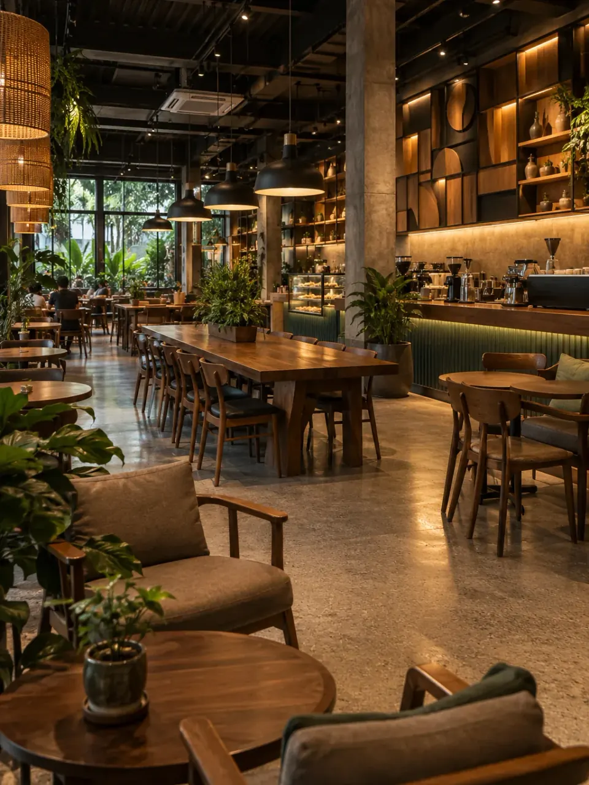
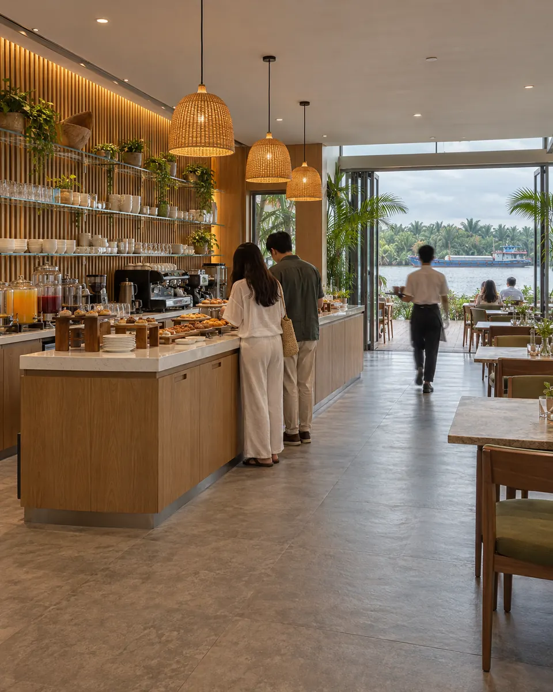
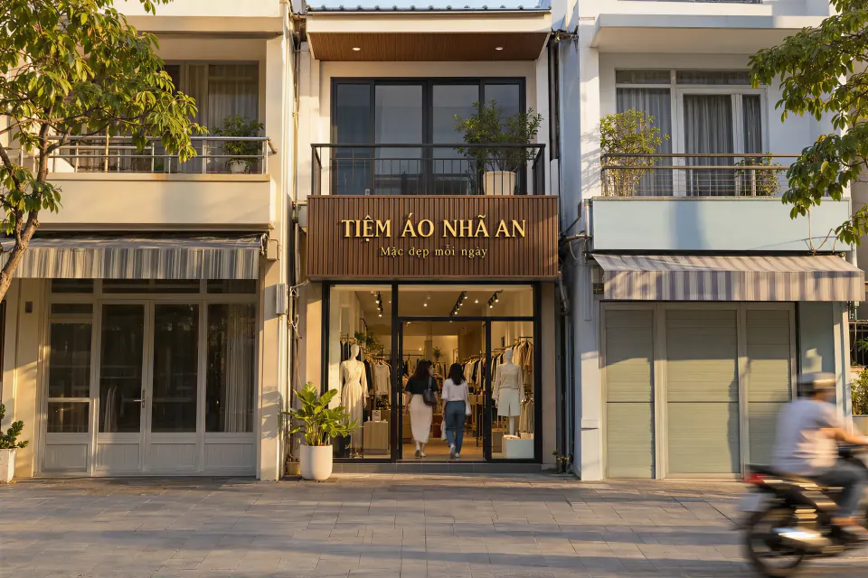
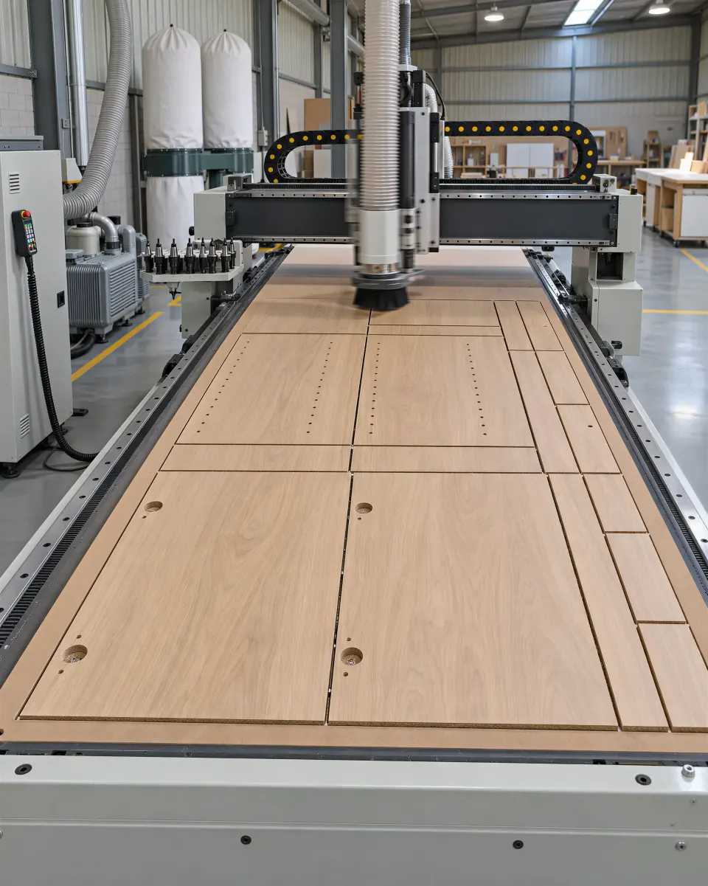

<!-- @dsCard group="Page" height=560 -->
<!-- GENERATED by scripts/docs/build-design-system.mjs from src/site/index.html; do not edit. -->
<link rel="stylesheet" href="https://fonts.googleapis.com/css2?family=Plus+Jakarta+Sans:ital,wght@0,300;0,400;0,500;0,600;0,700;1,300;1,500&display=swap">
<script>addEventListener("click", (event) => { if (event.target.closest("a[href]")) event.preventDefault(); }, true);</script>
<script>document.documentElement.lang = "vi"; document.documentElement.classList.add("motion-fallback", "motion-ready");</script>
<section
          class="project-reel section-gap"
          id="du-an"
          data-header-tone="ink"
          aria-labelledby="projects-title"
        >
          <h2 class="sr-only" id="projects-title" data-en="Work in motion">
            Nhịp công trình
          </h2>
          <div
            class="project-track"
            role="region"
            tabindex="0"
            aria-label="Nhịp công trình — cuộn ngang để xem thêm"
            data-en-aria-label="Project reel — scroll horizontally for more"
          >
            <figure class="project-card project-card--high">
  <span class="project-card__media">
    
  </span>
  <figcaption data-en="Shophouse café">Quán cà phê nhà phố</figcaption>
</figure>
<figure class="project-card project-card--mid">
  <span class="project-card__media">
    
  </span>
  <figcaption data-en="Riverside café">Quán cà phê ven sông</figcaption>
</figure>
<figure class="project-card project-card--high">
  <span class="project-card__media">
    
  </span>
  <figcaption data-en="Mobile coffee cart">Xe cà phê lưu động</figcaption>
</figure>
<figure class="project-card project-card--low">
  <span class="project-card__media">
    
  </span>
  <figcaption data-en="Fashion shop frontage">Mặt tiền shop thời trang</figcaption>
</figure>
<figure class="project-card project-card--high">
  <span class="project-card__media">
    
  </span>
  <figcaption data-en="Lit-letter testing">Thử đèn chữ nổi</figcaption>
</figure>
<figure class="project-card project-card--low">
  <span class="project-card__media">
    
  </span>
  <figcaption data-en="CNC cutting in the workshop">Cắt CNC tại xưởng</figcaption>
</figure>
          </div>
        </section>
